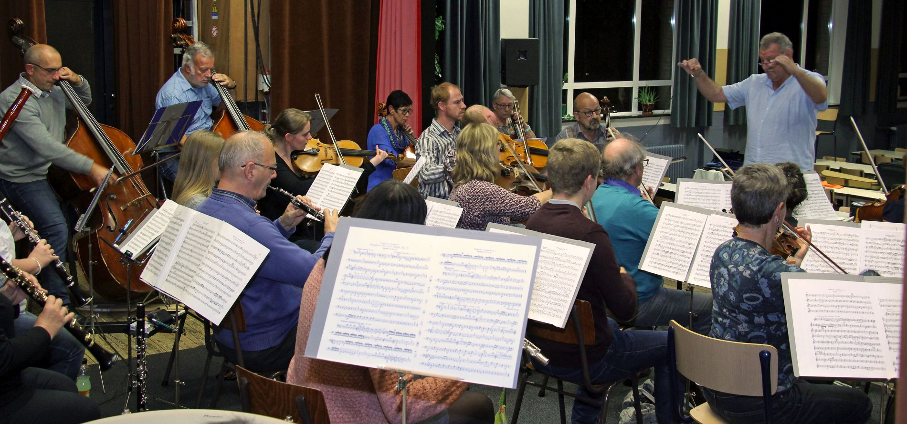
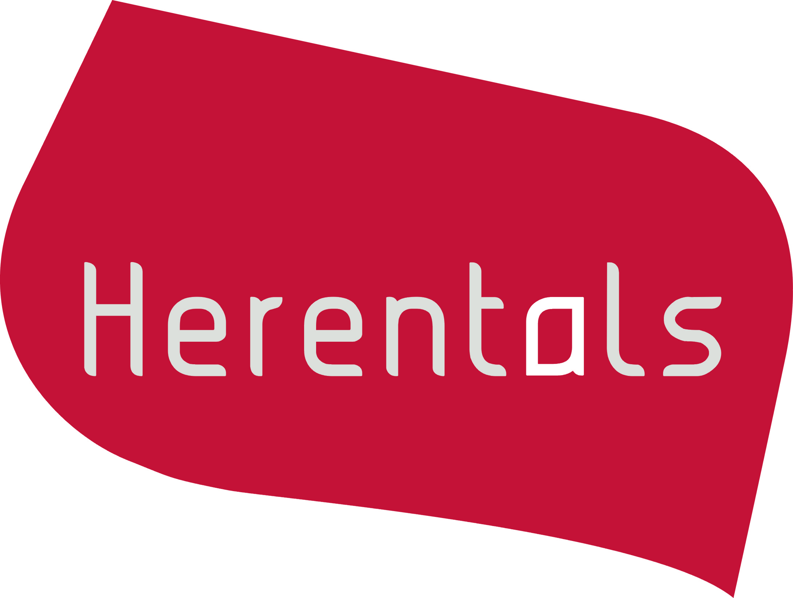
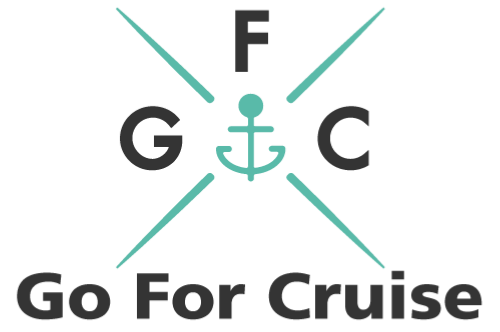

Het orkest
Het Herentals Symfonisch Orkest, kortweg het H.S.O., mag zich terecht een semiprofessioneel orkest noemen. Het is samengesteld uit zowel getalenteerde amateurmuzikanten als ervaren beroepsmuzikanten. De artistieke leiding is in handen van de heer Carl Vervoort, die reeds meerdere orkesten heeft gedirigeerd. Op zoek naar een nieuwe uitdaging besloot hij samen met een enthousiaste groep vrienden om begin 2017 een nieuw orkest op te richten in Herentals. Enthousiasme werkt aanstekelijk, want al snel vormde zich een volwaardig symfonisch orkest.
Het H.S.O. streeft ernaar om kwaliteitsvolle concerten te geven zonder het plezier om samen te musiceren uit het oog te verliezen. Op het repertoire staan klassieke werken, opera en operette, musical, filmmuziek, enz.
Het orkest wordt gesteund door
